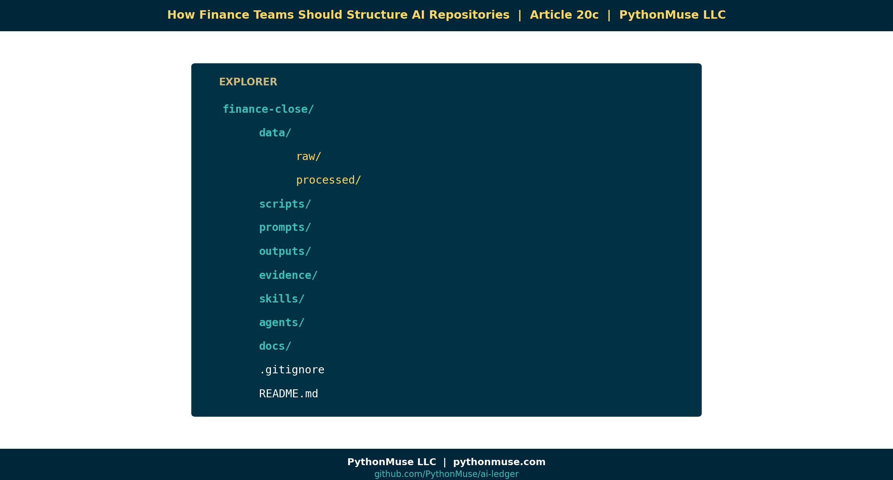

20c — How Finance Teams Should Structure AI Repositories
~7 min read · Part 3 of 6 in Version Control for Accountants in the AI Era
PythonMuse LLC Series launch · 2026

A Repository Is Just a Better Binder
Accountants already know how to organize evidence. Every audit binder, every close package, every reconciliation folder follows the same instinct:
Raw stuff over here. Working stuff over here. Final stuff over here. Supporting evidence over there.
A finance AI repository is the same idea — just enforced by structure instead of by hope.
When the structure is good, three magical things happen:
- AI can find what it needs without asking.
- Reviewers can audit what changed without re-reading everything.
- New team members can onboard in an afternoon, not a quarter.
The Recommended Layout
Here is the layout we use in the demo repo and recommend for finance teams adopting AI workflows:
finance-close/
│
├── data/
│ ├── raw/ ← Source files. NEVER edited. Read-only mindset.
│ └── processed/ ← Cleaned, transformed, ready-to-use outputs.
│
├── scripts/ ← Reusable Python (or other) scripts. The "SOPs for the computer."
├── prompts/ ← Saved AI prompts. Version-controlled.
├── outputs/ ← Reports, schedules, deliverables. Regeneratable.
├── evidence/ ← Audit artifacts: screenshots, tie-outs, sign-offs.
├── skills/ ← AI Skills (per article 17).
├── agents/ ← AGENTS.md / CLAUDE.md (per article 17b).
├── docs/ ← Plain-English documentation, SOPs, decision logs.
│
├── .gitignore ← What to deliberately exclude (PII, temp, secrets).
└── README.md ← The "front page" of the binder.
That's it. Eight folders and two files. Most finance repos do not need more.
The Four Principles That Make This Work
1. Raw data never changes.
data/raw/ is sacred. If your bank export from April 30 lives in raw/2026-04-bank.csv, that file is immutable. Every script reads from it. Nothing writes back into it.
This is the same principle as source documentation in audit. The bank statement doesn't get edited — it gets referenced.
2. Outputs must be regeneratable.
If you delete everything in outputs/, your scripts should be able to rebuild it from data/raw/ plus scripts/.
This is the reproducibility test. If a number can't be reproduced from inputs + logic, it isn't an output — it's a guess.
3. Prompts are assets.
Most teams treat prompts as throwaway chat messages. They're not. A good prompt is intellectual property that took hours to refine. Keep it in prompts/, give it a filename, version it.
If your CFO asks "what prompt produced this commentary?" you should be able to answer with a file path, not a screenshot.
4. Scripts are workpapers.
The Python (or SQL, or VBA) file that builds your reconciliation is a workpaper. Comment it like one. Review it like one. Sign off on changes to it like one.
This is the heart of Accounting as Code: financial logic stops living in cells you can't audit and starts living in files you can.
Real Examples From Accounting Work
The same layout serves wildly different use cases:
| Use case | What lives in data/raw/ |
What lives in scripts/ |
What lives in outputs/ |
|---|---|---|---|
| Bank reconciliation | Bank exports, GL extract | reconcile_bank.py |
Reconciliation report, exception list |
| Variance analysis | Budget, actuals | variance_engine.py |
Variance schedule, commentary draft |
| Accrual support | Vendor invoices, contracts | accrual_calc.py |
Accrual schedule, JE backup |
| Payroll validation | Payroll register, headcount | payroll_check.py |
Validation report, exception flags |
| Vendor analysis | AP transactions | vendor_clustering.py |
Top-N vendor report, anomalies |
Same skeleton. Different content.
A Framework, Not a Tool
🛠️ Reminder — this layout is the framework.
Whether the repo lives on GitHub, Azure DevOps Repos, or AWS CodeCommit, the folder structure above is identical. The hosting platform is interchangeable; the discipline is not.
One caveat for AWS CodeCommit users: enforce branch protections and review approvals via IAM + approval rule templates (CodeCommit's equivalent of GitHub's branch protection rules).
Demo Repo Snapshot
By the end of Article 20c, github.com/PythonMuse/git-demo has the full skeleton above, with one realistic example workflow loaded into each folder. Clone it. Steal it. Adapt it.
"But What About Sensitive Data?"
The .gitignore file is your friend. Common things finance teams exclude:
- Anything under
data/raw/PII/ - Anything matching
*.secret,*.env,*credentials* - Anything large enough that GitHub will refuse it (over 100 MB)
- Local working files (
~$*.xlsx,.DS_Store, etc.)
If you wouldn't put it in the audit binder you hand to PwC, don't put it in the repo. The structure forces you to be deliberate about evidence, not careless.
What's Next
Now that the binder has shape, we need to compare it head-to-head with the tool everyone is currently using: the shared drive. In Article 20d — GitHub vs. The Shared Drive, we put them side-by-side and let the differences speak for themselves.
Related Reading
- Reproducible Accounting
- The Workings Layer Method
- Skills and Agents for Accountants
- Your First CLAUDE.md
- What the Heck Is a Script?
- One-Time to Repeatable Workflows
Next in the Series
→ Article 20d — GitHub vs. The Shared Drive
A note on how this article was made. This article started with me. The folder layout came out of real engagements where I kept seeing teams build AI workflows on top of shared-drive chaos and wondering why nothing was reproducible. GitHub Copilot (Claude Opus 4.7) then built the final article and all visual concepts — working from my direction and feedback at each step. I reviewed every output, pushed back on things I didn't like, and made all final content decisions. That process — bringing your own experience, using AI to build and iterate, and staying in the editorial seat throughout — is exactly what this series is about.
By Svetlana Toohey